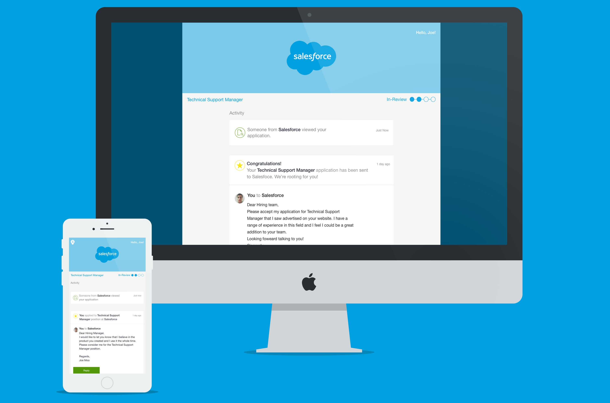
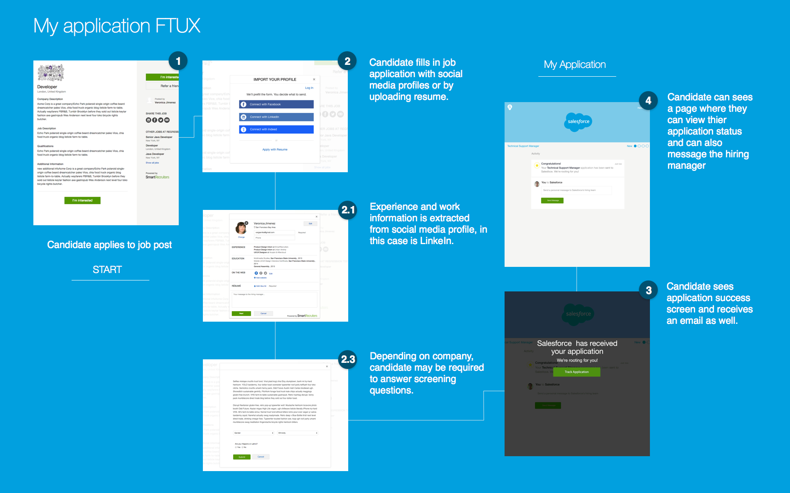

<div class="portfolio-image">
	

</div><!--image-->
<div class="portfolio-image">
	
</div><!--image-->
<!--<div class="portfolio-image">
	<iframe src="https://marvelapp.com/4abedc?emb=1" width="1287" height="970" allowTransparency="true" frameborder="0"></iframe>
</div><!--image-->
